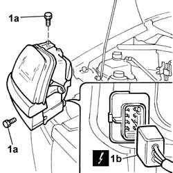
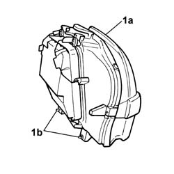

5540B80 front light cluster with turn signal and foglamp one lh or rh r r with interfering parts removed
- Path
- Procedures > 55 ELECTRICAL EQUIPMENT > 5540 EXTERIOR LIGHTING > 5540B headlamps > 5540B80 front light cluster with turn signal and foglamp one lh or rh r r with interfering parts removed
- Kind
- repair procedure (removal / refitting; the operation number is the code)
- Applies to
- engines: 1.2 8v, 1.6 16v, 1.3 JTD 16V, 1.9 JTD 8V, 1.9 DIESEL; all production periods
- Interactive page
- https://sloeber94.github.io/elrnDB-fDbl/en/#/2584940
Applies to: engines: 1.2 8v, 1.6 16v, 1.3 JTD 16V, 1.9 JTD 8V, 1.9 DIESEL; all production periods
 Removing
Removing
 Refitting
Refitting1. Undo the fixing bolts (1a) and disconnect the electrical connector (1b).
 | Name | Connector |
|---|---|---|
1b | Left headlamp |
| Name | Connector |
|---|---|---|
1b | Right headlamp |

Applies to: engines: 1.2 8v, 1.6 16v, 1.3 JTD 16V, 1.9 JTD 8V, 1.9 DIESEL; all production periods
1. Remove the lights cluster (1a), removing the pins (1b) from their seating in the bodywork.

Applies to: engines: 1.2 8v, 1.6 16v, 1.3 JTD 16V, 1.9 JTD 8V, 1.9 DIESEL; all production periods
Refitting
RemovingFit the lights cluster, centring the pins in their seats in the bodywork.
Connect the electrical connector for the lights cluster.
| Name | Connector |
|---|---|---|
- | Left headlamp |
| Name | Connector |
|---|---|---|
- | Right headlamp |
Tighten on the lights cluster with the fixing bolts.